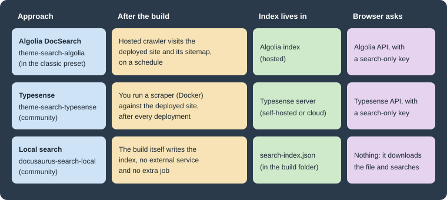

Search
|
This content was generated with the assistance of AI and should be verified against the official documentation before being relied on in production. |
This page was written against Docusaurus 3.10.2 (the last release of the 3.x line) and checked on 2026-10-26. A
Docusaurus site has no search until you choose an engine: the classic theme ships an empty search slot and the engines
are themes or plugins that fill it. This page explains the three common engines, Algolia DocSearch (the one Docusaurus
documents as first-class), Typesense and local search (both community-maintained), and how to wrap or replace the
SearchBar component yourself. The running example is the documentation site of Pocket Units, the small units-conversion
library with a C# and a Python implementation. The Algolia, Typesense and local search configurations below were built
with Docusaurus 3.10.2; no request reached an Algolia or Typesense service, so the live search results were not tested.
What search is and why a static site needs an engine
A Docusaurus build produces plain HTML files. There is no server that can answer the question "which pages mention the word length". Something has to hold an index of the pages and answer queries, and the choices differ in where that index lives:
-
a hosted service (Algolia), filled by a crawler that visits the deployed site;
-
a search server that you run or rent (Typesense), filled by a scraper that you run;
-
a file generated by the build itself and downloaded by the browser (local search).

The figure compares the three approaches. In the first two the index is built after the site is deployed, so a new page is searchable only after the next crawl or scrape. In the third the index is built together with the site, so it always matches the build, at the price of shipping the index to every reader.
The classic theme renders the search box through the @theme/SearchBar component, in the navbar of every page. Its
default implementation is a no-op: the source file says that by default the classic theme provides no search bar
implementation. A search theme (or your own component) provides it by shadowing that name. This is why a freshly created
site has no search box.
Algolia DocSearch
Algolia DocSearch is the engine the Docusaurus documentation describes as built in. @docusaurus/preset-classic already
depends on @docusaurus/theme-search-algolia, and the preset adds that theme to the site as soon as themeConfig.algolia
exists, so there is nothing more to install for the classic preset. Without the classic preset you install
@docusaurus/theme-search-algolia, add it to the themes array and add the algolia object under themeConfig.
How it works
DocSearch has two halves. A crawler, run by Algolia (or by you, for sites that are not eligible for the free program or
sit behind a firewall), visits the deployed site and writes records into an Algolia index. The default preset generates a
sitemap.xml that the crawler can use. The browser then queries the index through the Algolia API from a modal opened
from the navbar.
The sequence diagram shows the two halves. The crawler runs on a schedule (weekly by default, adjustable in the Algolia
interface), and you can trigger a crawl from the Algolia dashboard after a significant change. The browser step uses only
the public, search-only API key. The last step is done by the theme: hits are absolute URLs of the deployed site, and the
theme turns each one into a relative URL with the site baseUrl applied so the click is handled by the single-page
application router instead of a full page load.
Configuration
The following docusaurus.config.ts is a complete configuration for Pocket Units. The identifiers come from environment
variables so the same file works in CI; the fallbacks are placeholders, not real values.
import {themes as prismThemes} from 'prism-react-renderer';
import type {Config} from '@docusaurus/types';
import type * as Preset from '@docusaurus/preset-classic';
const config: Config = {
title: 'Pocket Units',
url: 'https://docs.example.com',
baseUrl: '/',
onBrokenLinks: 'throw',
i18n: {defaultLocale: 'en', locales: ['en']},
presets: [
[
'classic',
{
docs: {sidebarPath: './sidebars.ts'},
blog: false,
theme: {customCss: './src/css/custom.css'},
} satisfies Preset.Options,
],
],
themeConfig: {
algolia: {
appId: process.env.ALGOLIA_APP_ID ?? '<YOUR_ALGOLIA_APP_ID>',
apiKey: process.env.ALGOLIA_SEARCH_KEY ?? '<YOUR_ALGOLIA_SEARCH_KEY>',
indexName: 'pocket-units',
contextualSearch: true,
searchPagePath: 'search',
},
prism: {theme: prismThemes.github, darkTheme: prismThemes.dracula},
} satisfies Preset.ThemeConfig,
};
export default config;Source: Docusaurus docs: Search
A build of this configuration (with the default scaffold content) succeeds and produces the search page, the OpenSearch description and the search button in the navbar:
[INFO] [en] Creating an optimized production build...
[SUCCESS] Generated static files in "build".The generated build folder contains search/index.html (the results page), opensearch.xml, and every page has a head
tag that points to the description:
<link rel=search type=application/opensearchdescription+xml title="My Site" href=/opensearch.xml>Source: Docusaurus docs: Search
The navbar contains a button whose class is DocSearch-Button and whose label is "Search" with a keyboard shortcut hint.
Clicking it loads the modal code on demand, so the DocSearch modal and its CSS are not part of the initial bundle.
The options of themeConfig.algolia are:
| Option | Meaning | Default or note |
|---|---|---|
|
Algolia application identifier. Required. |
A missing value is a build error that links to the DocSearch migration post. |
|
Public, search-only API key. Required. Never use an admin or write key. |
The Docusaurus documentation says the search key is safe to commit. |
|
Name of the Algolia index. Required. |
Usually given to you when the site is accepted into DocSearch. |
|
Restrict results to the current locale and docs version, plus pages that are not versioned. |
|
|
Extra Algolia search parameters; its |
|
|
Route of the full results page. Set it to |
|
|
Results whose URL matches are opened with |
Unset. For an index that covers more than one site. |
|
Object with |
Unset. For an index that serves deployments with different base URLs. |
|
Enables Ask AI (see below). A string assistant identifier or an object. |
Unset, so Ask AI is off. |
|
Algolia Insights switch, documented on the Docusaurus search page. |
|
Any other DocSearch option put in the algolia object is passed to the DocSearch component, because the validation
accepts unknown keys in that object.
Which DocSearch version the theme uses
The product name and the npm versions are easy to confuse, so it is worth being exact. Algolia publishes the DocSearch
front end as @docsearch/react (and @docsearch/js), and the current major is 5: both packages had 5.1.2 as their
latest tag on 2026-10-26, with 4.7.1 under the latest-v4 tag. Docusaurus 3.10.2 does not use v5. The
@docusaurus/theme-search-algolia 3.10.2 package declares the dependency range ^3.9.0 || ^4.3.2 for @docsearch/react,
and the scratch site resolved it to 4.7.1. So:
-
a site on Docusaurus 3.10 runs DocSearch v4 (or v3 if you pin it) even though the standalone
@docsearch/jspackage is at v5; -
DocSearch v4 became supported in Docusaurus 3.9, as an opt-in: sites could stay on v3 or move to v4 by updating
@docsearch/react; a fresh install now resolves to v4; -
the theme source marks the v3 compatibility code with comments saying that Docusaurus v4 should upgrade DocSearch and drop v3, so DocSearch v5 is outside the supported range of the 3.x line.
Do not install @docsearch/react 5 next to this theme: it is outside the range the theme declares. The version in use
selects the Ask AI behaviour described next. The theme decides at build time with version.startsWith('3.').
Contextual search
Contextual search is on by default. At runtime the theme builds Algolia facet filters from the page the reader is on: one
filter language:<locale> and a group of docusaurus_tag:<tag> filters. The tags come from <meta> tags written into
the HTML, which the crawler also records. In the scratch build, a docs page contains:
<meta data-rh=true name=docsearch:docusaurus_tag content=docs-default-current />
<meta data-rh=true name=docsearch:language content=en />
<meta data-rh=true name=docsearch:version content=current />
<meta data-rh=true name=docusaurus_locale content=en />
<meta data-rh=true name=docusaurus_tag content=docs-default-current />The tag docs-default-current identifies the docs plugin instance (default) and the version (current); for a
versioned site the tag changes with the version, so a reader on version 1.0 sees hits for 1.0 and for unversioned pages
(tag default) only. The home page carries the tag default. This is why the index must have facets on the attributes
the Docusaurus documentation lists (docusaurus_tag, language, lang, version and type): if search finds
nothing, but works with contextualSearch: false, the usual cause is an index created without those facets. The official
fix is to use Algolia’s recommended Docusaurus crawler configuration, delete the index, and crawl again; the crawler’s
initialIndexSettings apply only when the index is first created.
To control the filtering yourself set contextualSearch: false and write searchParameters.facetFilters, for example one
filter per product line. Setting both merges them. See
Versioning and
Internationalization for how versions and locales appear in the index.
Ask AI (opt-in)
Ask AI lets a reader ask a question in natural language from the same modal and get an answer based on the indexed
documentation. It arrived with DocSearch v4 support in Docusaurus 3.9 and is off unless you configure it: the library
being v4 does not enable it. You create an assistant in the Algolia dashboard, then reference it from
themeConfig.algolia.askAi, either as the assistant identifier alone:
algolia: {
appId: process.env.ALGOLIA_APP_ID ?? '<YOUR_ALGOLIA_APP_ID>',
apiKey: process.env.ALGOLIA_SEARCH_KEY ?? '<YOUR_ALGOLIA_SEARCH_KEY>',
indexName: 'pocket-units',
askAi: process.env.ALGOLIA_ASSISTANT_ID ?? '<YOUR_ASSISTANT_ID>',
},Source: Docusaurus 3.9 release notes
or as an object when the assistant uses a different index or key:
algolia: {
appId: process.env.ALGOLIA_APP_ID ?? '<YOUR_ALGOLIA_APP_ID>',
apiKey: process.env.ALGOLIA_SEARCH_KEY ?? '<YOUR_ALGOLIA_SEARCH_KEY>',
indexName: 'pocket-units',
askAi: {
assistantId: process.env.ALGOLIA_ASSISTANT_ID ?? '<YOUR_ASSISTANT_ID>',
suggestedQuestions: true,
},
},Source: Docusaurus docs: Search
The object accepts assistantId (required), indexName, apiKey, appId, searchParameters (with facetFilters) and
suggestedQuestions. What you leave out is filled from the top-level algolia values when the configuration is
validated, and the top-level facetFilters are copied when the object has none; the contextual filters are merged in at
runtime, so an assistant sees the same language and version scoping as the search. The documentation describes recent
questions, conversation history and a bring-your-own-LLM option, with the LLM provider’s usage billed to you, and requires
an Algolia index with the Ask AI assistant enabled. The object form was built successfully (the build does not
contact Algolia) and the string form follows the same validation path; the answers themselves were not tested because they need an Algolia account.
The theme refuses to build when Ask AI is configured but the installed @docsearch/react is a 3.x version. In that case
the build stops with this message:
The askAi feature is only supported in DocSearch v4. Please upgrade to DocSearch v4 by installing "@docsearch/react": "^4.0.0" or remove the askAi configuration from your theme config.The message suggests ^4.0.0; on Docusaurus 3.10.2 the range the theme declares is ^3.9.0 || ^4.3.2, so prefer
^4.3.2 when you pin it.
Validation errors
A missing required key is reported at the start of the build. With apiKey removed, the scratch build fails with:
[ERROR] Error: Unable to build website for locale en.
[cause]: [Error [ValidationError]: "algolia.apiKey" is required]A missing appId gives the same kind of error with an extra hint to read the DocSearch infrastructure migration post. The
usual reason for either is an environment variable that is not set in CI and no fallback in the config.
Styling
The modal has its own accessible styling. It is customised with DocSearch CSS variables in src/css/custom.css, set
separately for the light theme and for [data-theme='dark']. The Docusaurus documentation lists --docsearch-primary-color,
--docsearch-text-color, --docsearch-muted-color, --docsearch-container-background, --docsearch-modal-background,
--docsearch-searchbox-background, --docsearch-searchbox-focus-background, --docsearch-hit-color,
--docsearch-hit-active-color, --docsearch-hit-background, --docsearch-footer-background and
--docsearch-key-gradient. A typical use is to point the primary colour at the Infima variable so the modal follows the
site theme:
:root {
--docsearch-primary-color: var(--ifm-color-primary);
}
[data-theme='dark'] {
--docsearch-primary-color: var(--ifm-color-primary);
--docsearch-modal-background: var(--ifm-background-surface-color);
}Source: Docusaurus docs: Search
See Styling, Theming and Swizzling for Infima variables and dark mode.
Eligibility and cost
DocSearch is free for developer documentation and technical blogs that meet Algolia’s eligibility checklist; you apply to the program and Algolia sends the set-up details by email. A site that is not eligible can run its own crawler against its own Algolia account. Ask AI is a separate feature with its own requirements, described above.
Typesense
Typesense is an open source search engine that you can host yourself or rent as a cloud cluster. The Docusaurus
documentation lists it as a community-maintained option that works like DocSearch, with two components: a scraper
(typesense/docsearch-scraper) that indexes the deployed site, and the theme docusaurus-theme-search-typesense that
provides the search bar. Bugs belong to those projects, not to Docusaurus. At the check date the theme was at version
0.27.0, whose compatibility table says Docusaurus >= 3.9.0 < 4.0.0 and Node.js 20 or later, and it describes itself as a fork of the
Algolia theme.
Install the theme with a pinned version and register it in themes:
npm i -E docusaurus-theme-search-typesense@0.27.0themes: ['docusaurus-theme-search-typesense'],
themeConfig: {
typesense: {
typesenseCollectionName: 'pocket-units',
typesenseServerConfig: {
nodes: [
{
host: process.env.TYPESENSE_HOST ?? 'search.example.com',
port: 443,
protocol: 'https',
},
],
apiKey: process.env.TYPESENSE_SEARCH_KEY ?? '<YOUR_TYPESENSE_SEARCH_ONLY_KEY>',
},
typesenseSearchParameters: {},
contextualSearch: true,
},
},Source: Typesense guide: DocSearch
This configuration builds with Docusaurus 3.10.2 and produces the same navbar button, search/index.html and
opensearch.xml as the Algolia theme. The key points are:
-
typesenseCollectionNameis required and must equal the scraper’sindex_name; -
typesenseServerConfigholds thenodes(host, port and protocol of each server) and the API key, which must be a search-only key because it ships to the browser; -
typesenseSearchParameterscarries extra Typesense search parameters, andcontextualSearchandsearchPagePathwork as in the Algolia theme (the validation defaults aretrueand'search'); -
@docusaurus/plugin-sitemap(part of the classic preset) must generate the sitemap, because the scraper reads it throughsitemap_urlsin its JSON configuration, and the scraper needs the server running when it is executed.
The scraper runs as a Docker container against the deployed site, with the server settings in an environment file
(TYPESENSE_API_KEY, TYPESENSE_HOST, TYPESENSE_PORT, TYPESENSE_PROTOCOL) and its JSON configuration in the
CONFIG variable. Because it must run after each deployment, it usually becomes a step of the deployment workflow. The
Typesense guide documents the full configuration, including start_urls, stop_urls and the selector for the level 1
heading for Docusaurus. Running the scraper and a Typesense server was not done here: it needs a running server and a
deployed site, so only the theme configuration and the build were verified.
Local search
For a small site there is no need for a service: a plugin generates a search index during the build and the browser
downloads it. The Docusaurus documentation points to community plugins for this and does not endorse one. The most widely
used plugin is @easyops-cn/docusaurus-search-local; at the check date its version was 0.55.3, and its peer dependencies
are @docusaurus/theme-common (^2 || ^3), React and an optional open-ask-ai package. It is a theme, so it goes in
the themes array, and it replaces the SearchBar slot like the Algolia theme does.
npm i -E @easyops-cn/docusaurus-search-local@0.55.3themes: [
[
require.resolve('@easyops-cn/docusaurus-search-local'),
{
hashed: true,
language: ['en'],
indexDocs: true,
indexBlog: true,
indexPages: false,
docsRouteBasePath: '/docs',
blogRouteBasePath: '/blog',
searchResultLimits: 8,
highlightSearchTermsOnTargetPage: true,
ignoreFiles: ['/docs/internal'],
},
],
],This was built in the scratch site and succeeded. The build folder then contains search-index.json (about 85 KB for the
default scaffold) and a search page, the navbar has a search input instead of a button, and the bundle requests the
index with a content hash in the query string (search-index{dir}.json?_=<hash>) because of hashed: true, which lets a
CDN cache the file for a long time. The options accepted by the plugin (read from its validation schema, with defaults)
are:
| Option | Meaning | Default |
|---|---|---|
|
Which content kinds are indexed. |
|
|
Route base paths of the docs and blog, as a string or an array. In docs-only mode |
|
|
Folders used to compute the content hash. |
|
|
Languages to support: the languages of the |
|
|
Add a content hash to the index request ( |
|
|
Tune the Lunr pipeline; removing the stemmer allows partial-word matches at a performance cost. |
|
|
Number of results, and characters of context per result. |
|
|
Highlight the terms on the page that is opened. |
|
|
Show the path to the heading in each result. |
|
|
Routes (strings match exactly, regular expressions partially) and CSS selectors to leave out of the index. |
|
|
Keyboard shortcut to focus the search box, its hint, and the key combination. |
|
|
|
|
|
For several docs instances: the plugin ID whose preferred version selects the index. |
unset |
|
Separate indexes for sub-paths and what to do on pages with no context. |
|
|
Index pages that have |
|
|
Edit distance for fuzzy matching. |
|
|
Custom Chinese dictionary content or file. |
unset |
|
Optional Ask AI widget (needs |
unset |
The trade-offs are the usual ones for a client-side index. There is no external account, no crawler job and no secret,
and the index always matches the build. On the other hand every reader downloads the index, so the approach suits small
and medium sites; the Docusaurus documentation describes local search as suited to small sites whose index the browser can download. Translations of the search UI are keys in i18n/<locale>/code.json
(theme.SearchBar.* and theme.SearchPage.*); see Internationalization.
As with every community plugin, check that a release supports your Docusaurus version before upgrading; the plugin’s
README lists version pairs for known errors.
Customising or replacing the SearchBar
Whatever engine you use, the box in the navbar is the @theme/SearchBar component. The classic navbar renders it on the
right unless the navbar configuration has an item of type search, in which case that item decides where it appears.
Because the box is an ordinary theme component, it can be wrapped or replaced by swizzling. The Algolia theme exposes
three components. Listing them with the CLI (the --list flag only lists and does not prompt):
npx docusaurus swizzle @docusaurus/theme-search-algolia --list --typescript[INFO] Components available for swizzle in @docusaurus/theme-search-algolia:
┌────────────────────┬────────┬────────┬─────────────┐
│ Component name │ Wrap │ Eject │ Description │
├────────────────────┼────────┼────────┼─────────────┤
│ SearchBar │ Unsafe │ Unsafe │ N/A │
├────────────────────┼────────┼────────┼─────────────┤
│ SearchPage │ Unsafe │ Unsafe │ N/A │
├────────────────────┼────────┼────────┼─────────────┤
│ SearchTranslations │ Unsafe │ Unsafe │ N/A │
└────────────────────┴────────┴────────┴─────────────┘Source: Docusaurus docs: Swizzling
All three are marked unsafe, so swizzling needs the --danger flag, and the component may change in a minor release;
you have to review your copy when you upgrade Docusaurus. The theme must be active first: the listing fails with
"Theme @docusaurus/theme-search-algolia not found" in a site that has no themeConfig.algolia. The same applies to
SearchPage (the results page route) and SearchTranslations (the strings of the modal).
Wrapping
A wrapper renders the original component and adds to it. The following command creates the wrapper file:
npx docusaurus swizzle @docusaurus/theme-search-algolia SearchBar --wrap --danger --typescript[SUCCESS]
Created wrapper of SearchBar from @docusaurus/theme-search-algolia in
- ".../src/theme/SearchBar/index.tsx"The generated wrapper imports the original through the @theme-original alias. Adding a link to the results page next to
the button gives:
import React, {type ReactNode} from 'react';
import Link from '@docusaurus/Link';
import SearchBar from '@theme-original/SearchBar';
import type SearchBarType from '@theme/SearchBar';
import type {WrapperProps} from '@docusaurus/types';
type Props = WrapperProps<typeof SearchBarType>;
export default function SearchBarWrapper(props: Props): ReactNode {
return (
<>
<SearchBar {...props} />
<Link className="navbar__item navbar__link" to="/search">
All results
</Link>
</>
);
}Source: Docusaurus docs: Swizzling
The build succeeded and the navbar HTML ends with <a class="navbar__item navbar__link" href=/search>All results</a> right
after the DocSearch button. Prefer wrapping to ejecting: it keeps your code small and keeps the behaviour that the theme
may improve later.
Replacing
To provide a completely different search, make a component named src/theme/SearchBar/index.tsx that does not import the
original. The Docusaurus documentation suggests either swizzling the empty SearchBar of the classic theme or starting
from the Algolia one. This minimal replacement has no JavaScript search at all: a form that sends the query to an
external engine restricted to the site host. It is a stand-in to show the mechanism, not a recommendation.
import React, {type ReactNode} from 'react';
import useDocusaurusContext from '@docusaurus/useDocusaurusContext';
export default function SearchBar(): ReactNode {
const {siteConfig} = useDocusaurusContext();
const host = new URL(siteConfig.url).hostname;
return (
<form action="https://duckduckgo.com/" method="get" target="_blank">
<input type="hidden" name="sites" value={host} />
<input
type="search"
name="q"
placeholder="Search Pocket Units"
aria-label="Search Pocket Units"
/>
</form>
);
}Source: Docusaurus docs: Search
In a site with no search theme this builds and the navbar contains the form, with the input named q and the hidden
sites input set to the host of url. A real replacement would query your own API. The useSearchLinkCreator hook of
@docusaurus/theme-common builds links to the results page, which the Algolia modal uses for its "see all results" link.
Choosing an engine
| Aspect | Algolia DocSearch | Typesense | Local search plugin |
|---|---|---|---|
Maintained by |
Docusaurus theme, Algolia service |
Community theme and scraper |
Community plugin |
Index built |
By Algolia’s crawler, after deploy |
By your scraper, after deploy |
By the build |
Needs an account or server |
Algolia account (free program for eligible docs) |
A Typesense server or cloud cluster |
No |
Versions and locales |
Contextual facet filters |
Option |
One index per build; contexts by path |
AI answers |
Ask AI, opt-in (DocSearch v4) |
Not covered by the theme’s documentation |
Optional, needs an external service |
Size for readers |
Modal code loaded on demand |
Queries go to the Typesense API |
The index file is downloaded |
For Pocket Units, a small library, the local plugin is enough and costs nothing; a project with many versions, or one that wants answers rather than links, is the case for DocSearch.
Pitfalls
-
A new site returns no results until the crawler or scraper has run at least once; the crawl happens after deployment, so a brand-new index is empty.
-
A missing
apiKeyorappIdfails the build. Read them from environment variables and set those in CI, or keep the public search key in the config. -
Never put an admin or write key in
themeConfig: everything in it is delivered to the browser. -
askAiwith a 3.x@docsearch/reactfails the build, and@docsearch/react5 is outside the supported range. -
Changing
baseUrlor the domain makes every URL in the index wrong until it is crawled again; usereplaceSearchResultPathnamefor deployments that share one index. -
The swizzled
SearchBaris an unsafe component: after upgrading Docusaurus compare it with the new original. -
For the local plugin in docs-only mode, set
docsRouteBasePathto the same value as the docsrouteBasePath. -
The community plugins have their own release schedule; Typesense theme 0.27.x declares support for Docusaurus 3.9 up to but not including 4.